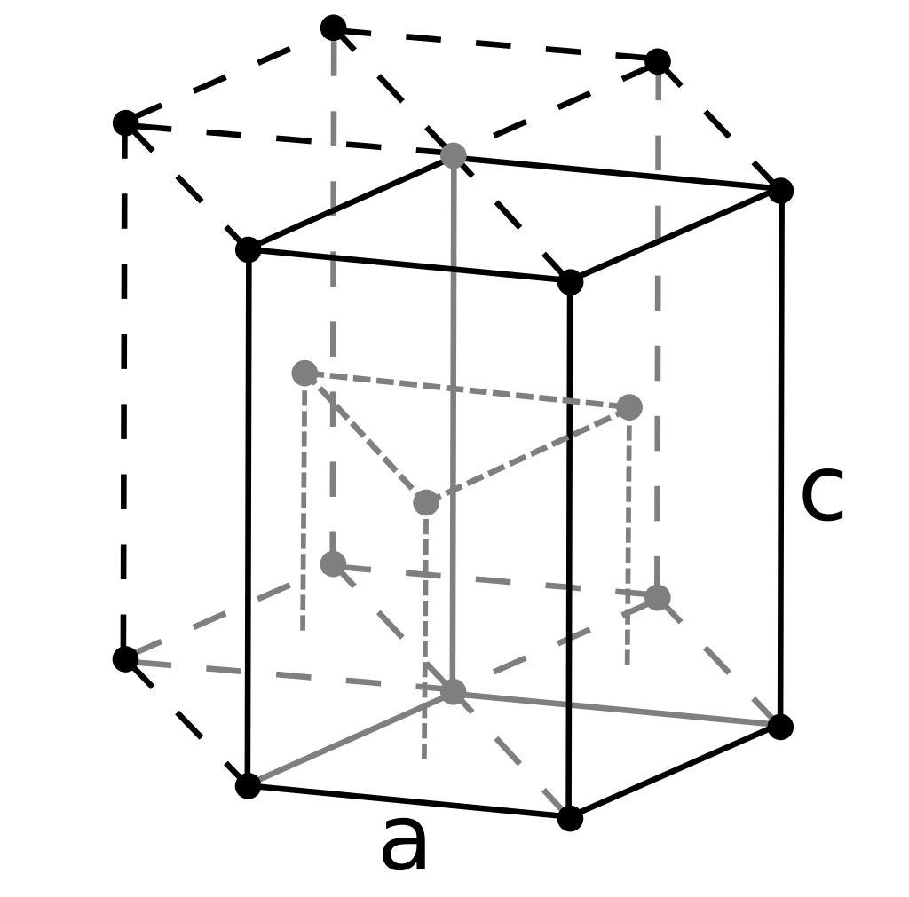

Physical properties
Phase at STP
solid
Melting point
1560 K (1287 °C, 2349 °F)
Boiling point
2742 K (2469 °C, 4476 °F)
Density (near r.t.)
1.85 g/cm3 when liquid (at m.p.) 1.690 g/cm3
Critical point
5205 K, MPa (extrapolated)
Heat of fusion
12.2 kJ/mol
Heat of vaporization
292 kJ/mol
Molar heat capasity
16.443 J/(mol·K)
Atomic properties
Oxidation states
+1,[2] +2 (an amphoteric oxide)
Electronegativity
Pauling scale: 1.57
Ionization energies
1st: 899.5 kJ/mol 2nd: 1757.1 kJ/mol 3rd: 14,848.7 kJ/mol
Atomic radius
empirical: 112 pm
Covalent radius
96±3 pm
Van der Waals radius
153 pm
Other properties
Natural occurrence
primordial
Crystal structure
hexagonal close-packed (hcp)

Speed of sound
12,890 m/s (at r.t.)
Termal expansion
11.3 µm/(m·K) (at 25 °C)
Termal conductivity
200 W/(m·K)
Electrical resistivity
36 nΩ·m (at 20 °C)
Magnetic ordering
diamagnetic
Magnetic susceptibility
−9.0·10−6 cm3/mol
Young's modulus
287 GPa
Shear modulus
132 GPa
Bulk modulus
130 GPa
Poisson ratio
0.032
Mohs hardness
5.5
Vickers hardness
1670 MPa
Brinell hardness
590–1320 MPa
CAS Number
7440-41-7
History
Discovery
Louis Nicolas Vauquelin (1798)
First isolation
Friedrich Wöhler & Antoine Bussy (1828)
Main isotopes of beryllium
Isotope
7Be
9Be
10Be
Abundance
trace
100%
trace
Half-life
53.12 d
1.39×106 y
Decay mode
ε
γ
stable
β−
Product
7Li
-
10B